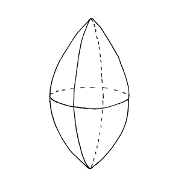

MobileNet V2
MobileNet V2在MobileNet V1的基础上，引入了线性瓶颈层(Linear Bottlenecks)和倒残差结构(Inverted residuals)。
Linear Bottlenecks
作者认为，非线性的激活函数，比如ReLU，会导致信息的丢失。
具体地，作者将一个二维空间的流形( manifolds)通过一个后接ReLU激活的变换矩阵，嵌入到另一个维度的空间中，然后再投影回原来的二维空间。
结果显示：当另一个空间的维度较低(n=2,3,5)时，还原效果很差；当另一个空间维度高一些(n=15,30)时，才能够基本还原。
但是，在接下来你会看到，这里采用的Inverted residuals中的通道数会被最后一个1x1进行压缩，也就是要将3x3卷积提取的特征进行压缩，但这样做就对应了上述实验中另一个空间维度较低时的情况，即”信息丢失”。
针对这个问题，作者提出将卷积后的激活函数设置为线性的。实验证明，该方法能够有效保留信息。具体实现时，只需去掉本来在卷积后的非线性激活函数即可。
Inverted residuals
在ResNet中，你已经见过瓶颈结构，它是一个两头粗，中间细的结构，而这里的Inverted residuals正好相反，下面来具体看一下。
仔细回想，在ResNet中，第一个1x1卷积负责降低通道数，中间的3x3卷积用于提取特征（通道数不变），第二个的1x1卷积负责升高通道数，通道数变化情况为：高–>低–>高，正好是一个瓶颈结构。
而在这里的Inverted residuals中，第一个1x1卷积负责增大通道数(低–>高)，中间的3x3卷积用于提取特征（通道数不变），第二个1x1卷积负责升高通道数(高–>低)，这与ResNet中的瓶颈结构正好相反。

融合我们上面所讲的 Linear Bottlenecks以及Inverted residuals，就得到了MobileNet V2中的bottleneck，其具体结构如下：
完整的MobileNetV2网络结构如下：
其中：
t：expand_ratio，即输入通道变化倍数；
c：通道数；
n：该模块重复次数；
s：stride。注意：对于n>1的情况，只有第一个重复块的的stride等于s，剩余重复块的stride均为1。
PyTorch 实现 MobileNet V2
现在来实现MobileNet V2。
首先实现网络结构图中的bottleneck：
1 | class InvertedResidual(nn.Module): |
1x1 conv的stride始终固定为1，因此传入的stride仅针对3x3的depth wise conv有效：当stride=1时，特征图尺寸不变；当stride=2时，特征图尺寸减半。
stride=1时特征图尺寸不会改变；in_channels=out_channels时，输入输出通道数相同。
这两个条件都满足时，输入与输出的维度完全一致，因此可做跳连，其余情况则不做。
这里的非线性激活函数统一使用了ReLU6，事实上，在MobileNet V1中就使用过ReLU6。它将原始ReLU作用后的取值限定在$[0,6]$之间，而不是$[0,+\infty]$，这是为了使得模型在低精度时也能够具有较强的能力，更多细节可自行搜索。
有了bottleneck，就能够实现MobileNet V2了：
1 | class MobileNetV2(nn.Module): |
上述代码首先实现了网络结构图中最开始的Conv2d，接着使用for循环实现了bottleneck的堆叠，最后实现了剩余的层(Conv2d，avgpool，Conv2d)。
其中，_make_divisible函数实现如下：
1 | def _make_divisible(v, divisor, min_value=None): |
该函数的作用是将通道数调整为8或4的倍数（这里是8），以便更能利用硬件进行加速，关于这一点了解即可，这里给出一个直观的测试结果：
看，通道数总能够被转化为8的倍数。
最后，来测试一下刚刚实现的MobileNet V2：
参考：


- 本文链接：http://yoursite.com/2021/06/02/%E7%BB%8F%E5%85%B8%E5%8D%B7%E7%A7%AF%E6%9E%B6%E6%9E%84-MobileNet-v2/
- 版权声明：本博客所有文章除特别声明外，均默认采用 许可协议。